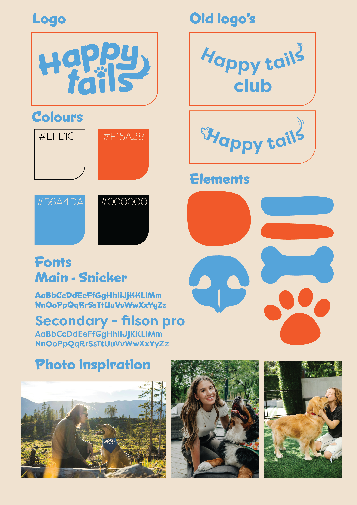
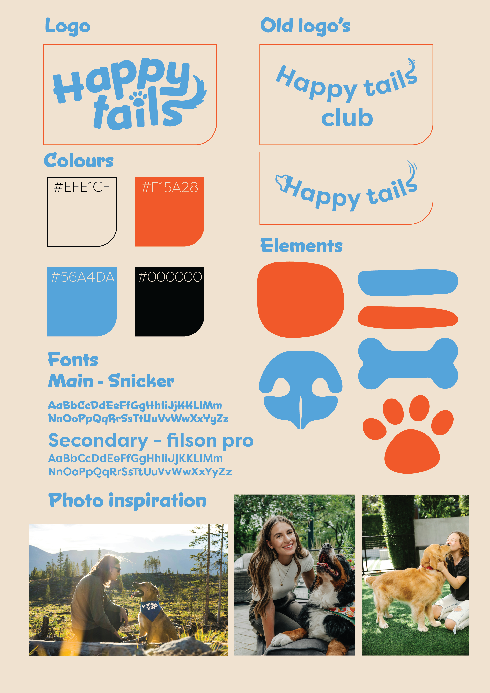

General Information
This branded website is publicly available at buas-media-interactive.github.io/my-website (please change text and hyperlink destination)
This website was created by…
- Amy de Graaf (ID: 230012)
- Luuk van Houts (ID: 231376 )
- Jada Page (ID: 247298)
- Tess Lehner (ID: 247287)
Content
| # | Student ID | Value | Name and link of content |
|---|---|---|---|
| 1. | 230012 | Homepage and Corporate | Homepage Corporate |
| 2. | 231376 | Services and About us | Services About us |
| 3. | 247298 | Contact page | Contact |
| 4. | 247287 | Blog | Blog |
Slogan
Paws up for playtime!
The slogan captures the excitement and joy. “Paws up” symbolizes the enthusiasm, while “for playtime” focuses on the core of our service. It aligns with our mission to create a playful, trustworthy community where dogs and dog owners can connect with playdates, care and friendship for their furry companions.
Brand message
Making it easier for dog lovers to find playmates for their pups
The brand message reflects the values by making it easy for dog owners to connect, promoting playfulness and companionship, while still ensuring convenience and peace of mind through safe and reliable connections
Vision
To connect dog owners with trusted like-minded pet lovers, ensuring every dog gets the attention, play, and care they deserve.
Our vision focuses on connecting the dog owners with like-minded pet lovers, ensuring that they will get their attention and play they deserve, while fostering trusted community based on companionship and care beyond basic needs
Mission
Our mission is to create a vibrant and trusted community where dog owners can connect, socialize, and find pawmates, care, and friendship for their furry companions. We make every dog's life happier and healthier by fostering meaningful connections and offering convenient services like playdates and dog sitting. Because every pup deserves a fur-ever friend!
This mission supports the need for a trusted, social space where dog owners can easily connect and care for their pets. By offering services like playdates and dog sitting, it promotes happier, healthier lives for dogs while building a strong, supportive community. Every pup deserves friendship, and so do their humans.
Values
Where Every Tail Finds Joy!
Playing is the basics of the well-being of your dogs. It’s not only about having fun with your dog, it’s about having your dog play with others to socialize them, it’s about their mental stimulation and letting them run around and meet their limits. This value emphasizes the importance of giving your dog opportunities to interact, explore and enjoy their time with other dogs and humans. whether you do it through playdates, games, or adventure. Play is an essential part of a dog's health and happiness.
Paws beyond the basics
Besides the basics of feeding, walking and playing with your dog. We also ensure that your dog feels mentally stimulated, furfilled and satisfied. This value represents our effort to provide services such as dog sitting, playdates and creating a community of dog owners where you can find support and meet new people for you and your four-legged friend.
Pawsitive Connections, Unbreakable Bonds!
This value highlights the importance of building a connection, discovering new adventures and creating bonds that support the companionship between dogs and humans. The bond between your dog and you is the most special bond you create in life, making sure your dog is happy and taking care of is the best thing you can do for you dog, helping your dog find new connections and friend helps dogs to feel socially and physically in shape, and ensures that owners can create a new network.
We've Got Your Tail Covered!
We recognize the struggle that life can be busy, and finding time to care for and socialize your dog isn’t as easy as most people think. This value is the core of our company, providing a hassle-free solution for dog owners to help your dog find even more joy, whether through our easy-to-arrange playdates, the dog-sitting services, or our supportive community.
Trust Us, We Don’t Play Fetch with Safety
Trust and safety are essential when it comes to you and your dog. That’s why we create a secure environment where you can confidently connect with a trusted dog community. Our reliable service ensures that your dog is always in safe hands, giving you peace of mind. By fostering meaningful connections between owners and their dogs, we build a supportive network where safety and trust come first.
 

Do's

Don'ts

Flyer front and back
Design Elements
Our visual identity is built around a simple yet intentional three-color palette.- #EFE1CF This is our base color, used as the background in most designs. It brings warmth, calmness, and a natural tone that reflects comfort and friendliness. Beige creates a neutral canvas that allows our accent colors to stand out while maintaining a soft, inviting aesthetic.
- #F15A28 One of the few colors that dogs can perceive, blue was selected for its practicality and emotional resonance. It symbolizes trust, reliability, and calmness, values that are at the heart of our brand. Blue also helps us connect with both pets and their owners on a deeper level.
- #56A4DA s the complementary color to blue, orange brings energy, enthusiasm, and warmth to our palette. It adds a playful, vibrant touch that contrasts beautifully with blue, creating a visually harmonious and balanced feel.
Together, these colors not only create a strong and consistent visual identity but also support the emotional tone we want to convey, joy, trust, and a sense of belonging for every member of our dog-loving community.
Font choices
The main font is called “snicker”. This font is playful and looks like it’s written with the hand. This gives an authentic and friendly look.
The secondary font is Filson pro. This is a more simple font that is easily readable for larger pieces of text while still fitting within our style. It is a dynamic and modern font.
Logo
The logo is made with a playful and fun font, and the letters are placed in a lively way to give it a cheerful and friendly look. Inside the logo, there are small details that show a paw and a tail. The tail starts from the end of the letter “s” and curls around playfully. The top of the letter“I” is shaped like a paw, which shows that dogs are a big part of what we do.
These little touches make the logo feel warm, fun, and welcoming. It fits really well with our goal of bringing dogs and their owners together to play, connect, and enjoy time with others.
Icons
The icons we use are all connected to things that belong to dogs. For example, we use shapes like a paw, a nose, and bones. These dog-related elements help make the visual style more playful and clearly focused on dogs. They make it easy for people to see right away that our brand is all about dogs and their happiness.
In our design, we also choose soft, round shapes instead of straight lines. Round shapes feel more friendly, gentle, and fun. They help create a warm and welcoming feeling, which fits perfectly with our brand’s goal, to build a kind, joyful place for dogs and their owners. Everything in our visual style, from the icons to the shapes, is made to support that friendly and playful feeling.
Production
Design Elements
Visual Identity
Our visual identity is built around a simple yet intentional three-color palette:
- #EFE1CF This is our base color, used as the background in most designs. It brings warmth, calmness, and a natural tone that reflects comfort and friendliness. Beige creates a neutral canvas that allows our accent colors to stand out while maintaining a soft, inviting aesthetic.
- #F15A28 As the complementary color to blue, orange brings energy, enthusiasm, and warmth to our palette. It adds a playful, vibrant touch that contrasts beautifully with blue, creating a visually harmonious and balanced feel.
- #56A4DA One of the few colors that dogs can perceive, blue was selected for its practicality and emotional resonance. It symbolizes trust, reliability, and calmness, values that are at the heart of our brand.
Together, these colors not only create a strong and consistent visual identity but also support the emotional tone we want to convey: joy, trust, and a sense of belonging for every member of our dog-loving community.
Font Choices
The main font is called “Snicker”. This font is playful and looks handwritten. This gives an authentic and friendly look.
The secondary font is Filson Pro. This is a more simple font that is easily readable for larger pieces of text while still fitting within our style. It is a dynamic and modern font.
Logo
The logo is made with a playful and fun font, and the letters are placed in a lively way to give it a cheerful and friendly look. Inside the logo, there are small details that show a paw and a tail. The tail starts from the end of the letter “s” and curls around playfully. The top of the letter “i” is shaped like a paw, which shows that dogs are a big part of what we do.
These little touches make the logo feel warm, fun, and welcoming. It fits really well with our goal of bringing dogs and their owners together to play, connect, and enjoy time with others.
Icons
The icons we use are all connected to things that belong to dogs. For example, we use shapes like a paw, a nose, and bones. These dog-related elements help make the visual style more playful and clearly focused on dogs.
In our design, we also choose soft, round shapes instead of straight lines. Round shapes feel more friendly, gentle, and fun. They help create a warm and welcoming feeling, which fits perfectly with our brand’s goal: to build a kind, joyful place for dogs and their owners. Everything in our visual style, from the icons to the shapes, is made to support that friendly and playful feeling.
Design Elements Justification
Please provide a list of design elements alongside their justifications:
-
A colour scheme (with HTML colour codes, which must be consistent with your final website)
- #EE7622 The orange colour refers to the Dutch identity and the city of Breda (Oranjestad). Orange stands for...
- #00406B Dark blue signifies...
- Font choices
- User interface patterns (e.g. grids, carousels, menu organizations etc.)
- The structure of the navigation and content (e.g. how content units are distributed across pages)
- All these elements must be justified by referring to the theory and/or vocabulary of design
-
Please relate these elements to other units, for example:
- How does website design fit the values and personality of the brand?
- How does website design fit the marketing and communication strategy?
- How does website design help showcase the unique value proposal of the product?
Credits
Please provide links and/or credits for third-party elements including:
- HTML templates if these are different from this one (buas-media-interactive/prj4-group-template)
- The source code for UX patterns other than the ones provided by the “Bootstrap” library (see getbootstrap.com/docs for a list of such patterns)
- Images that were not produced by students themselves, including when crediting is not mandatory (in other words, we ask you to credit Unsplash images)
Testing Report
Please write about…
- Your testing goals – in other words, what you are trying to learn about your website?
- Your testing methods, which includes information about:
- The test’s participants (number, match with target audience, etc.)
- The test’s setting (which material is used, is it done remotely, on campus, at home, etc.)
- The test’s protocol (what instructions are given, how it is recorded, etc.)
- Your testing results, which includes information about:
- Positive and negative aspects of the UI/UX that have been identified, ranked by importance.
- Improvements that have been implemented on the final website (or that would be implemented if doing so would be too complex)
Marketing
Context of campaign and promotional activities
Explain the context of the campaign is (What the campaign is about, what the message is, which promotional activities were executed). In addition, present the objectives as mentioned in the Communication en Media Plan.
Explain and justify the chosen channels/platforms used and show there is a solid connection to the objectives established in the Communication en Media Plan.
Learning Points
Identify and justify your learning point (based on the Communication en Media Plan). What did you learn during the duration of the project concerning the campaign? What worked and what didn’t? What went as expected and what didn’t? What would you do differently? Reflect on the past work and describe what you learned.
Future Planning
Reflection on what has been done and describe in detail what you would do if the project would continue.
Describe in detail your future recommendations if the campaign would be continued.
Detail and describe clearly the process of what your would do differently based on you experience on this project related to the marketing assignment.
Professionalism
Present and organize below all social media/online activities of the campaign. Context and material are according to the brand style, image, and vision. Images on the site are of high-quality, readable, and properly designed.

Management
Lean Canvas
Problem
- Many dog owners struggle to connect with others in their neighborhood. Balancing work and pet care can be challenging, often leading to fewer social interactions for both owner and dog—especially in single-dog households where stimulation is limited.
- Finding suitable playmates is another issue. Owners may not know others open to dog interactions, especially if they have larger dogs, which can sometimes be seen as intimidating.
- Time constraints also play a role. Our target audience (ages 30–50) often works full-time, and short walks may not provide enough exercise or stimulation for their pets.
- Owners themselves often seek to expand their social circles. Meeting other dog lovers offers a way to build friendships while giving their dogs a chance to socialize.
Solution
- Happy Tails helps dog owners connect with others nearby for walks and playdates. Our platform makes it easy to let your dog play while you relax, chat, and form real connections with fellow dog lovers.
- With simple features and optional services, Happy Tails removes the stress of finding playmates. You can easily discover and message local users, no more awkward approaches or uncertainty.
Customer Segments
- We target dog owners aged 30 to 50 who want to socialize their dogs and meet others with shared interests. Many are also looking for flexible, trustworthy dog-sitting options.
- Our users include young professionals, families, remote workers, and single individuals who prioritize pet care and enjoy outdoor activities. Expats and newcomers benefit from joining a supportive local community.
- These owners are digitally savvy and prefer affordable, convenient alternatives to costly pet care. Happy Tails meets their emotional and practical needs by building a trusted, pet-loving network.
Unique Value Proposition
- Happy Tails is more than a pet service—it’s a community. We connect dog lovers to arrange playdates, share advice, and create real friendships through shared pet experiences.
- Our platform makes it effortless to meet others nearby and build a supportive network. Whether you're looking for a dog playmate or new friends, Happy Tails is your go-to space for both.
Unfair Advantage
- Unlike subscription-based or traditional pet care platforms, Happy Tails is a free, community-driven service for connecting dog owners in a natural and social way.
- We focus on playmates and community—not just services. Our unique angle prioritizes dog socialization and real human connection, filling a gap in the market.
Channels
- Instagram helps us connect with our audience through engaging posts and videos that build trust and show the Happy Tails vibe.
- Facebook reaches a slightly older demographic within our target group, extending our community reach.
- Flyers in local vet offices, pet stores, and training centers offer a physical touchpoint—complete with QR codes for quick access to our platform.
Key Metrics
- Website Traffic and Account Sign-Ups – We track visits and new user registrations to monitor platform growth.
- Social Media Engagement – Likes, comments, shares, and follows help us measure how well our content connects with our audience.
- Flyer Effectiveness – QR code scans and direct visits from printed materials let us assess offline marketing impact.
Revenue streams
- At Happy Tails, we generate revenue primarily through sponsorships from veterinarians and local trainers. These partnerships are vital for funding our day-to-day operations and providing the necessary resources to keep the platform running. By partnering with professionals who align with our values, we not only receive financial support but also gain credibility in the pet care community. This relationship allows us to offer high-quality content and services to dog owners while ensuring that our platform remains sustainable.
- We organize a variety of events to raise funds and expand our brand presence. These events, which include entry fees, raffles, and limited-edition merchandise sales, serve as a great way to engage the community while generating revenue. The limited-edition merchandise, ranging from apparel to pet accessories, helps us further promote Happy Tails and create a sense of exclusivity. These events not only bring in funds but also allow us to build a stronger connection with our community of dog owners, ensuring that our mission continues to grow.
- To diversify our revenue, we’ve also established affiliate partnerships with reputable pet supply brands. These partnerships offer a win-win situation, as we earn a commission when users make purchases through our referral links. This income stream enables us to continue offering valuable services to dog owners, all while providing them with access to quality pet products that can benefit both them and their dogs. We ensure that the products we recommend align with our values and are trusted by the community.
- We seek corporate sponsorships from pet-friendly businesses that share our commitment to supporting dog owners and promoting a dog-friendly lifestyle. By offering visibility within our platform and events, we provide these businesses with the opportunity to reach a targeted audience of dog owners and pet enthusiasts. In return, these businesses contribute financially to help us continue our work. This mutual relationship not only supports our mission but also helps pet-friendly brands grow alongside Happy Tails.
Cost structure
- Fixed Costs:
- Website Hosting and Maintenance: €500/month
- Salaries for Permanent Staff: €3,000/month
- Software Subscriptions: €200/month
- Insurance: €100/month
- Variable Costs:
- Event Costs: €300 per event
- Advertising Costs: €150 per month
- Flyer Printing and Distribution: €100 per month
- Affiliate Commission Fees: €5 per sale
- Merchandise Production: €10 per item
Services/products
- Our product, Happy Tails, is a platform designed to connect dog owners with one another to facilitate playdates, socialization, and reliable pet care. We offer a space for dog owners to find trustworthy playmates for their dogs, join a community of like-minded individuals, and arrange flexible, affordable care options such as dog sitting.
- This service contributes to our unique value proposition by offering a hassle-free way for dog owners to meet others nearby while ensuring their dogs get the socialization and care they need. Unlike other services that focus purely on dog sitting or walking, we emphasize community-building and making connections, allowing both dogs and owners to create lasting relationships.
- The fit between Happy Tails and our brand identity is clear. Our brand is centered around fostering connections, trust, and a sense of community. We are committed to making the lives of dogs and their owners more social, joyful, and stress-free. By focusing on creating an easy way for dog owners to meet each other and find support within their local areas, we align with the values of socialization, companionship, and care that our brand represents.
Validation of Assumptions
1. Assumption: Dog owners struggle to find local playmates for their dogs. We based this on the conversations with dog owners around us. Many said they didn’t know other owners nearby or weren’t sure if people were open to dog playdates, especially for larger dogs. This showed a clear need for a platform that makes those connections easier.
2. Assumption: Dog owners between 30–50 are open to using digital platforms. We shared our concept through Instagram and got positive reactions, especially from people in that age range. Flyers with QR codes also worked well, showing that our audience is digitally active and willing to try new solutions.
Reflection on the Trademark “Happy Tails”
At first, our idea was to make a dog food website with healthy options and reviews. But we realized that emotional connection and community were stronger needs among dog owners. That insight led to our pivot toward social dog playdates.
We chose the name Happy Tails because it’s warm, memorable, and reflects joy, connection, and wagging tails, everything our platform stands for. Compared to names like PawPals or DogGo, Happy Tails felt more unique and emotionally fitting.
Justification and validation of problem interviews
Problem interview and improvement value proposition Tess
Conclusion
It is evident from the first interview with Lisa Wahl, wishing her dog Bo had further walks and mingling with other dogs while she was at work. Happy tails can fix her problems of limited access for dog sitters, dog playmates and walkers that are reliable and trustworthy. Happy tails will thoroughly make sure any person on the website has security checks and measures such as Uber does for instance which would solve the one problem Lisa has with connecting with strangers to take care of Bo. As dog sitters are expensive and walkers are too, here at happy tails we provide Lisa with convenience, affordable care for her dog Bo and create a healthier routine for her dog on the daily.
Results and business pivot
Happy tails originally was meant to be a dog food company, providing healthy alternative diets best suited for each breed of dog, after conducting our interviews, we didn't get much of a demand for food services from the patient results. Instead through survey analysis we found a greater demand for sourcing reliable dog sitters, dog walkers and playmate services. The common denominator was that dog owners like Lisa Wahl worked a lot and only had little time of the day to walk their dog, thus feeling guilty and wanting their dog to have quality life experiences that are affordable and convenient for people in a time crunch. Here the Happy Tails website is a reliable and safe platform that allows these needs to be met for both dogs and their owners.Detailed conclusion form interviews
Customers job
The customers' jobs would be to source our happy tails website and find a suitable dog sitter, walker or playmate there. For security and comfortability purposes the dog owner and worker will meet up prior with their dog to see if it's a good fit. Anyone with an account on the website can apply to be a dog caretaker with whichever services or can only receive services by choice.
Pains
One pain that could arise from our website and services is that the owner lacks comfortability with their sitter, or that there is a lack of communication between service providers and seekers. Although there is security, just like uber sometimes there can be bad people that get reported.
Gains and Gain Creators
Saves dog owners time and ensures the dog is having a quality routine when they are busy at work or have a very taxing lifestyle. Provide convenience which is affordable for all type of financial varying people. Happy tails website provides a simple platform providing multiple services that help minimize the great demand to source help for dog owners we see globally and it also creates a community of dog lovers.
pain relievers
Security insecurity can be fixed by making the website participation mandatory to sign up with their legal name and type of documentation as well make the communication very accessible and to suggest dog owners with similar dog sitters. This way Happy Tails can minimize any concerns for the dog owners.Products and services
Happy Tails core offerings include a simple website which has accessible dog sitters, dog playmates and dog walkers. Here our experimental features include sourcing a dog sitter that connects well with your dog while also bonds well with the dog owner. Our website is reliable and has security measures for each person with an account and has varying prices that are affordable compared to other sitters provided now. The price can be negotiated too. Instead of sourcing all of these places to find the best price or most reliable place by comparing, Happy Tails website provides all services that are reliable and take away the time, money or inconvenience to source these services on your own.
Problem interview and improvement value proposition 2 Tess
Analysis
Phoenix and his dog Arlo’s interview analysis had the same demand for dog walking, dog sitting and dog playmates as did Lisa wahl in the previous interview. The common denominator was that people have busy lives and want to prioritize their dog but all services are way too expensive and time consuming. Happy tails solves all these issues as the dog sitter and walker would come to your home for pick up and worry free, while it provides convenience as the website has all three common concerns of dog sitting, walkers and lack of playmates in one place to source out help to.
Results and business pivot
Happy tails originally was meant to be a dog food company, providing healthy alternative diets best suited for each breed of dog, after conducting our interviews, we didn't get much of a demand for food services from the patient results. Instead through survey analysis we found a greater demand for sourcing reliable dog sitters, dog walkers and playmate services. The common denominator was that dog owners like Phoenix King, worked a lot and had goals they wanted to reach which consisted of time. Phoenix had little time to walk Arlo, thus feeling guilty and wanting his dog to have quality life experiences but also wanting quality for themselves that are affordable and convenient for people in a time crunch. Here the Happy Tails website is a reliable and safe platform that allows these needs to be met for both dogs and their owners.
Detailed conclusion form interviews
Customers job
The customers' jobs would be to source our happy tails website and find a suitable dog sitter, walker or playmate there. For security and comfortability purposes the dog owner and worker will meet up prior with their dog to see if it's a good fit. Anyone with an account on the website can apply to be a dog caretaker with whichever services or can only receive services by choice.
Pains
One pain that could arise from our website and services is that the owner lacks comfortability with their sitter, or that there is a lack of communication between service providers and seekers. Although there is security, just like uber sometimes there can be bad people that get reported.
Gains and Gain Creators
Saves dog owners time and ensures the dog is having a quality routine when they are busy at work or have a very taxing lifestyle. Provide convenience which is affordable for all type of financial varying people. Happy tails website provides a simple platform providing multiple services that help minimize the great demand to source help for dog owners we see globally and it also creates a community of dog lovers.
Pain relievers
Security insecurity can be fixed by making the website participation mandatory to sign up with their legal name and type of documentation as well make the communication very accessible and to suggest dog owners with similar dog sitters. This way Happy Tails can minimize any concerns for the dog owners.
Products and services
Happy Tails core offerings include a simple website which has accessible dog sitters, dog playmates and dog walkers. Here our experimental features include sourcing a dog sitter that connects well with your dog while also bonds well with the dog owner. Our website is reliable and has security measures for each person with an account and has varying prices that are affordable compared to other sitters provided now. The price can be negotiated too. Instead of sourcing all of these places to find the best price or most reliable place by comparing, Happy Tails website provides all services that are reliable and take away the time, money or inconvenience to source these services on your own.
Problem interview and improvement value proposition Jada
Conclusion
Customer Jobs
Killian’s key responsibilities include managing Sophie’s health as she ages, maintaining her exercise routine, ensuring her emotional comfort, and arranging care when needed, though he rarely travels.
Pains
- Managing Sophie’s health and medication
- Limited social interaction due to her protective behavior
- High cost of effective dog training
- Few large, secure dog parks nearby
Gains
- Strong bond and routine with Sophie
- Convenience of working from home
- Peace of mind from a supportive network of friends and family for pet care
Pain Relievers
- Affordable, effective dog training options
- Verified, trustworthy sitters for occasional travel
- Resources to support health and prevent illness (e.g. supplements)
- Tools to reduce social stress for protective dogs
Gain Creators
- Personality-based sitter and dog matching to avoid conflict
- Transparent sitter profiles with reviews and videos
- Virtual behavior assessments and safety checks
- More secure, local off-leash areas for high-energy breed
Products and Services
Core Offerings
- Dog-sitting platform with health- and temperament-aware matching
- Affordable training and wellness resources
- Dog health and routine management tools
Experiential Features
- Sitter profiles with experience, reviews, and intro videos
- Virtual compatibility screening for dogs
- Meet-and-greet scheduling and communication tools
- Local dog park and service locators
Accessibility and Pricing
- Tiered pricing: free basic use, premium for advanced features and training discounts
- Pay-per-use options for sitters or training sessions
- Transparency-focused design for safety and ease
Final Thoughts
Killian’s experience reflects the evolving needs of owners with aging, protective dogs. While his routine is stable, there’s a clear demand for trusted, affordable services, especially training and sitters sensitive to dog temperament. A smart, secure platform that personalizes support and prioritizes safety could offer real value to owners like Killian, helping them manage care with confidence and peace of mind.
Business Pivot
Based on this interview we were able to pivot out original idea of a healthy dog food company to ‘Happy Tails’ a website for socialization and connection between dog owners.
Problem interview and improvement value proposition 2 Jada
Conclusion
Customer Jobs
Yolanda’s does not work, her main responsibilities include raising a family and caring for Whiskey. Ensuring he gets regular walks and social interaction, and finding reliable care when she’s away.
Pains
- Guilt when leaving Whiskey alone
- Limited time for play and exercise on busy days
- Difficulty finding trusted long-term sitters
- Lack of convenient support tools
Gains
- Flexible daily routine with meaningful bonding time
- Joy from seeing Whiskey socialize and stay active
- Confidence from years of dog ownership and experience
Pain Relievers
- Trusted, background-checked sitter network
- Affordable, effective dog training options
- Flexible scheduling tools and reminders
- Food/toy delivery to save time
- Tools to reduce social stress for protective dogs
Gain Creators
- Personality-based playmate matching
- Local dog park locators and meet-up suggestions
- Personalized pet profiles and reviews
- Easy filters for location, availability, and dog traits
Products and Services
Core Offerings
- Verified dog-sitting and social matching platform
- Pet care scheduling app
Experiential Features
- Pet profiles with photos and traits
- Compatibility tools and sitter reviews
- Secure messaging and live updates
- Dog park locator and social features
Accessibility and Pricing
- Freemium model with basic features
- Premium for advanced tools and deliveries
- Flexible pricing by tier or service
Final Thoughts
Yolanda’s needs highlight a common desire among dog owners: more time, trust, and convenience. A platform that offers personalized, secure, and flexible services could ease her routine and enhance both her and Whiskey’s quality of life.
Business Pivot
Based on this interview, we were able to pivot our original idea of a healthy dog food company to ‘Happy Tails,’ a website for socialization and connection between dog owners.
Problem interview and improvement value proposition - Amy
Conclusion
Jerry, 49, owns Spike, a high-energy American Staffordshire-Labrador mix. Due to time constraints, he won’t get another dog. His routine includes work, midday walks, and weekend socialization for Spike.
Spike gets along with big dogs but dislikes small ones. Jerry avoids on-leash interactions due to past training advice, limiting Spike’s socialization. He struggles to coordinate meet-ups but wishes for an app to arrange walks and playdates. Managing Spike’s jumping is challenging, and he hopes time will help. Family assists with walks, and a boarding service might be needed for vacations. A dog-owner network for sitting and playdates would be useful.
Results and business pivot
We initially planned a website for purchasing dog food, but through interviews, we discovered that most dog owners were satisfied with their current suppliers. This led us to shift our focus and explore the daily challenges they faced with their pets. A key insight emerged: many single-pet households struggle with limited interaction between their dogs and others in the neighborhood. Based on this finding, we pivoted our idea towards facilitating local dog meetups to foster socialization and community among pet owners.
Detailed conclusion from interviews
Customers' job
Many dog owners want to find playmates for their dogs and meet new people. They are looking for ways to connect with others who are open to meet-ups and want to know where in their neighborhood these opportunities are available.
Pains
Many dog owners struggle to connect with others in their neighborhood, limiting socialization opportunities for their dogs. Single-dog households, especially those with larger dogs that may be perceived as intimidating, face additional challenges in finding playmates. Time constraints can make it difficult for full-time workers to provide enough exercise and stimulation for their dogs. At the same time, dog owners are also seeking ways to meet new people who share their interests, trying to balance a social life with pet care responsibilities.
Gains
Happy Tails connects dog owners in their neighborhood for walks and playdates. The platform helps users find like-minded dog owners nearby, allowing dogs to socialize while owners relax and chat. It provides a safe, trusted space for dogs and owners to interact without the hassle of finding companions. With extra services and effortless features, Happy Tails makes it easy to meet new people and arrange walks with just a few clicks.
Pain relievers
Happy Tails offers easy access to local dog owners, eliminating the struggle of finding nearby playmates for your dog. Convenient scheduling features remove the stress of finding available time slots, making it simpler to arrange walks and meetups. The platform creates a safe and trusted environment, giving dog owners peace of mind by ensuring all interactions happen within a community of like-minded individuals. Additionally, it supports social connection for owners, helping reduce feelings of loneliness and isolation often experienced while trying to balance work and pet care.
Gain Creators
Happy Tails enhances socialization for dogs by providing more opportunities for interaction, which improves their behavior and overall well-being. At the same time, it helps dog owners meet new people with shared interests, expanding their social circle beyond daily routines. The platform simplifies the process of organizing playdates, reducing the time and effort needed to find suitable companions. It also creates a supportive community where dog owners can share experiences, tips, and advice with one another.
Products and services
Happy Tails' core offering is organizing dog playdates. In addition, the platform features experiential services such as meeting new people, dog sitting, events, and opportunities for dogs to socialize in a friendly setting.
Accessibility and Pricing
Happy Tails organizes events with a €10 entry fee, such as dog meet-ups, social gatherings, or pet care workshops. At these events, limited-edition merchandise is available for purchase, ranging from €10 to €50. Items could include branded T-shirts, tote bags, dog accessories, or custom collars and leashes. These events and merchandise not only help raise funds and increase brand visibility, but also strengthen the Happy Tails community
Final thoughts
Jerry’s interview revealed that Spike, his dog, requires more stimulation beyond his daily walks. Jerry expressed the need for a solution that would address Spike's energy levels while being easy to manage within his busy schedule. This insight highlighted the demand for a convenient, stress-free way to offer dogs more socialization and physical activity without requiring too much time or effort from the owner.
Problem interview and improvement value proposition 2 Amy
Conclusion
Mirabel, 48, feels her dog lacks social interaction and is often alone for 5–6 hours a day due to her and her partner’s work schedules. She finds it hard to plan spontaneous activities and wishes there were more fenced dog areas in Alkmaar. She’s open to a website that connects dog owners for playdates and sitting, as long as it includes info about both dogs and owners, like size, energy level, and routines.
Trust is key for her, she would want to chat first and possibly meet before arranging anything. She believes her dog would really benefit from more social contact through such a service.
Detailed conclusion form interviews
Customers job
Mirabel, like many dog owners, wants more social interaction for her dog and for herself. She’s looking for easy ways to connect with local dog owners for meetups, especially since her dog doesn’t often get the chance to play with others. She values trust and convenience in any solution that helps her manage her responsibilities while giving her dog a better social life.
Pains
Mirabel struggles to find fenced dog areas in her city (Alkmaar), which limits off-leash play. Her husky doesn't do well with small dogs, so finding compatible playmates is challenging. With both her and her partner working, the dog is often home alone for 5–6 hours a day. She often has to plan her day around the dog’s schedule, which can limit her freedom. She doesn’t use any pet care services currently and finds it hard to trust strangers with her dog.
Gains
Happy Tails would allow Mirabel to easily find suitable dog playmates in her area, especially ones that match her dog's size and energy. It would also connect her to other owners with similar routines and mindsets, making it feel more like a trusted community than just a service. This platform would offer her peace of mind and a break from constantly juggling dog care with personal plans..
pain relievers
Happy Tails offers easy access to local dog owners, eliminating the strFilters to match dogs by size and energy level would help avoid mismatches, such as Mirabel’s husky being paired with much smaller dogs. Verified profiles and the option to chat before meeting provide an extra layer of trust, which Mirabel greatly values. A shared calendar or availability system would make it easier for her to find meetups that fit her busy schedule. Additionally, including owner bios allows her to feel more comfortable and informed about the people she’s connecting with.
Gain Creators
The platform allows for more regular and suitable social interaction for her husky, helping to meet the dog’s energy needs in a fun and safe way. It also gives Mirabel more freedom in her day, knowing her dog is engaged and not left alone for too long. Beyond that, it encourages community building, making her feel supported and less isolated in her neighborhood. It even offers her the opportunity to help others too, like occasionally offering to dog-sit in return.
Products and services
Happy Tails' core offering is organizing dog playdates. In addition, the platform features experiential services such as meeting new people, dog sitting, events, and opportunities for dogs to socialize in a friendly setting.
Accessibility and Pricing
Happy Tails organizes events with a €10 entry fee, including dog meet-ups, social gatherings, and pet care workshops. At these events, limited-edition merchandise is available for purchase, ranging from €10 to €50. Items may include branded T-shirts, tote bags, dog accessories, and custom collars and leashes. These initiatives aim to raise funds, enhance brand visibility, and strengthen the Happy Tails community.
Final thoughts
Mirabel’s interview emphasizes the importance of trust, compatibility, and convenience. She wants her dog to be happy and well-socialized, but without extra stress on her already full schedule. Happy Tails would offer her a balanced way to care for her dog while still having flexibility in her own life.
Appendix
Please use the list below to provide links to evidence for all parts of your justication. Please double-check all links before delivering the website. Do not hesitate to refer to these numbers above.